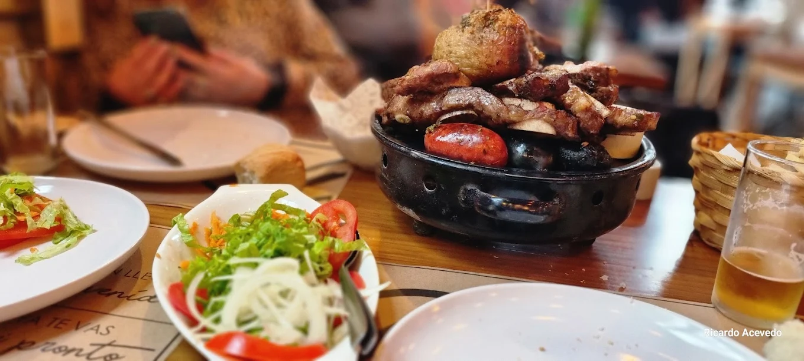
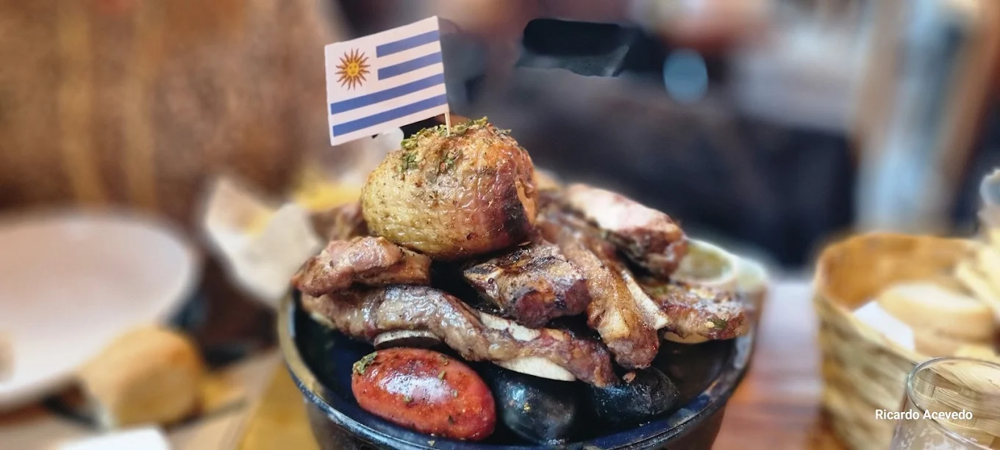

Experience the true essence of Uruguay with a unique combination of gastronomy and nature. Enjoy an authentic asado prepared by Andres in El Refugio restaurant. You will taste premium meats, local wine, and a relaxed atmosphere. Then, embark on a scenic boat tour along the Río de la Plata, discovering Colonia from a completely different perspective.



